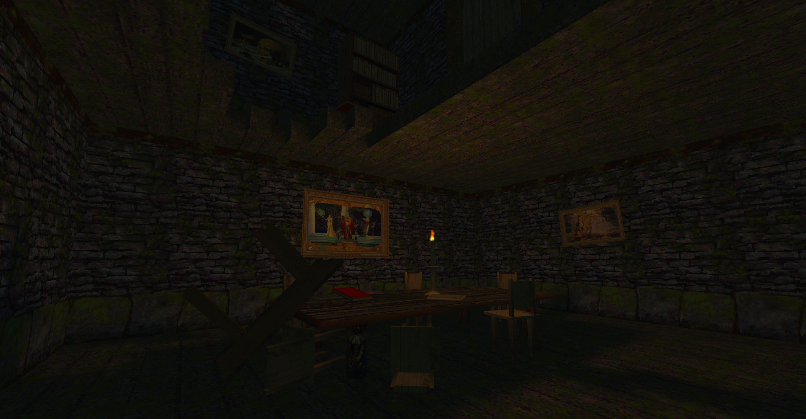
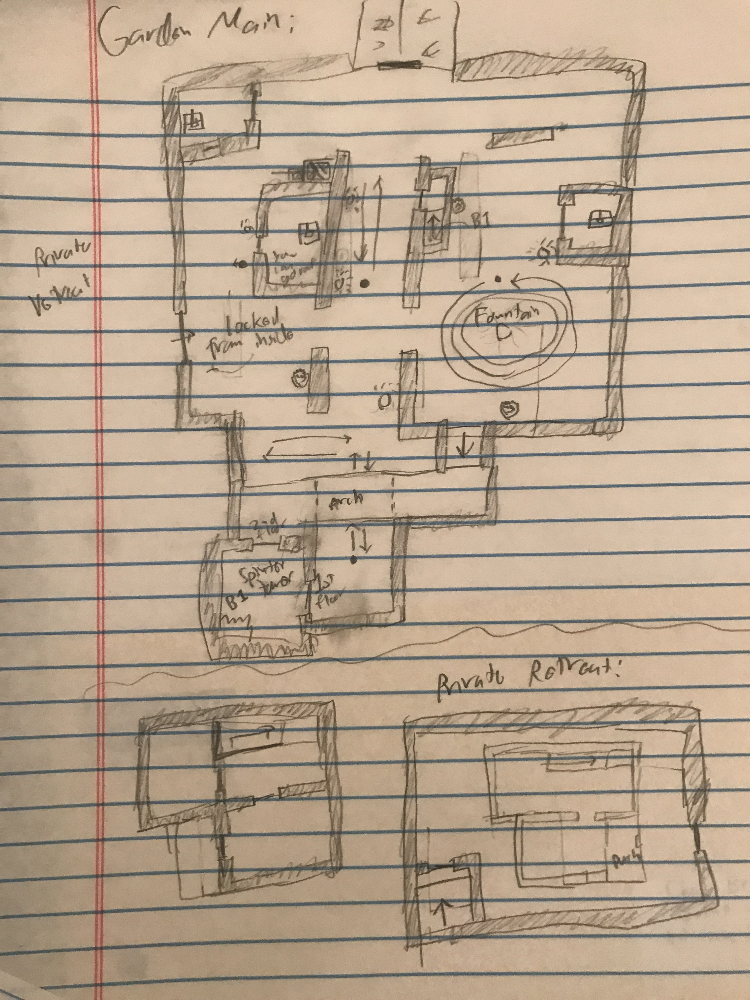

Old Habits and Dead Wives
A Thief 2 Fan Mission
Wide Linear, Stealth, Exploration7 Month Solo Project
Released September 27, 2022
Old Habits and Dead Wives is a fully complete, ~1.5 hour long level for Thief 2 (2000) that encourages careful stealth and creative navigation. Players fill the role of a thief hired by an unknown person to break into the mansion vault at a mountain estate, unraveling the mystery of their employer and the estate's owner as they navigate the interconnected space of both the mansion and the surrounding environment.


Experience Summary
One major inspiration of this project was the "wide linear" level design style of Arkane Studios, namely that of Deathloop and the Dishonored series. What this means for my level is that is it both consciously guided and pushing players to try certain things, while also giving a strong sense of freedom, particularly in navigation.The level begins with a fairly linear road leading up to the main mansion. This road, itself, gives several small options for how to progress. It also features a subtle environmental puzzle that allows players to find a key to to enter via the basement through a door half way up the road. If players continue up the road they will reach the front entrance to the mansion.
The mansion acts as the centerpiece of the level, much like a hub, and includes one required objective, and two optional. Though it is the most open-ended portion of the level, players are prodded by the environment to navigate to the East end of the mansion to reach the upper floors where the main objective, the vault, is located. Once players reach the vault they learn that it is locked and that the key is located behind the mansion. Once upstairs, players will have had the opportunity to unlock shortcuts, make hostile territory safer, and even discover hidden-in-plain-site shortcuts that will speed up their later return.
Once players navigate back down to ground level (much quicker than they ascended), they can either pursue the key in the back garden or complete their other objective in the abandoned house East of the mansion. The order in which players tackle these objectives is mostly trivial, as they return to the mansion afterwards either way. Most players went for the key first, ending up in the garden.
The garden area features several distinct locations, but players are given options of which they wish to go through to reach the key. What happens is that the path diverges early on, meets in the center, and then diverges again towards the end (like the shape of an 8), effectively allowing players to progress in four different ways or, if they so desire, to explore each area, as they are each brief enough to quickly move between.
After returning to the mansion and looting the vault, players will go to the abandoned house if they haven't already. Initially there are no enemies, and players must find a way in. Once inside, players are hinted towards a lost key to the basement, following bread crumb hints to find it within the house, the final of which requires critical thinking as the key has fallen from its supposed location, through the broken floor, and into the room below. The basement has a small amount of enemies and will funnel them to the location of the doll.
As per Thief standard, higher difficulties add more objectives (equivalent to optional objectives in contemporary games). One is self contained in the basement, and the other is a code lock right out front that requires two different hints, which each appear twice in various locations. Since it is introduced early on, players look for the clues as they go, and most did not have to backtrack to look for them later on.
Once all objectives are complete, players retreat to where they began to complete the mission.

Paper Layout planning
This project was the first time I attempted to approach level design from a more formal and planned angle, so before I jumped into the editor I drafted up layout concepts on graph paper. I had a process of paper designing portions of the level, implementing them in-game, testing the level up to that point, iterating on these portions, and repeating. Most of my paper designs didn't directly translate well into the editor, in part because my paper proportions were terrible and a fair amount changed in response to testing, but the fundamental concepts are still mostly there.Check out a PDF of my paper plans/notes here.
As a note of self-criticism, the level would have benefitted from me conceptualizing the setting more before I got into prototyping. The first chunk of playable space I created was done before I had a strong grasp on the story and context of the level, and as a result it feels the most disjointed, even after a lot of post-feedback overhauls.
Old Habits and Dead Wives
A Thief 2 Fan Mission
Wide Linear, Stealth, Exploration7 Month Solo Project
Released September 27, 2022
Old Habits and Dead Wives is a ~1.5 hour long, fully complete level for Thief 2 (2000) that encourages careful stealth and creative navigation. Players fill the role of a thief hired by an unknown person to break into the mansion vault at a mountain estate, unraveling the mystery of their employer and the estate's owner as they navigate the interconnected space of both the mansion and the surrounding environment.